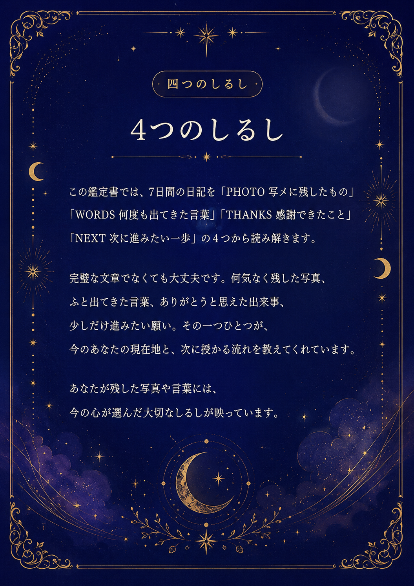
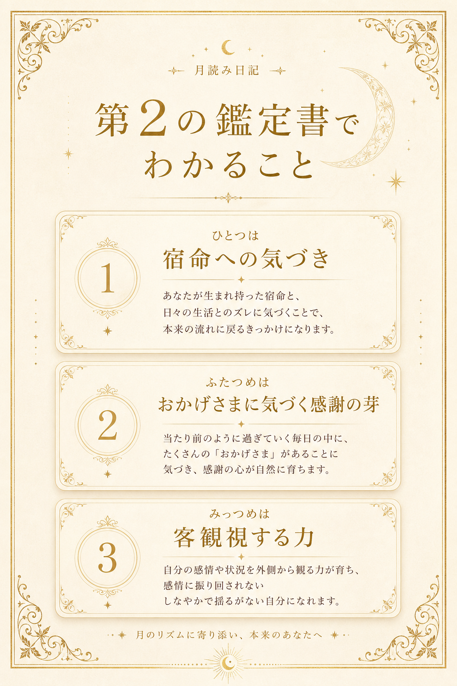

月読み日記にあらわれた
4つのしるし
7日間の日記に残された写真、言葉、感謝、次の一歩。
この鑑定書では、その4つのしるしから、今のあなたの流れと次章への導きを読み解きます。
SECOND READING
月読み日記 第2の鑑定書
7日間の記録に宿った、月のしるしと次章への導き天命に生きるための鑑定書です。

日記から浮かびあがった
4つのキーワード
新月の願いと7日間の記録がそろうと、ここにキーワードが表示されます。
7日間チャレンジテーマ
あなたは、それぞれの質問に、こう書きました。
日記データを読み込んでいます…
月読み日記から
見えた、今のあなた
記録を読み込み中です。
4つのしるしが告げる
育ち始めた願い
記録を読み込み中です。
宿曜から授かった
あなたの土台資質
宿曜情報を読み込み中です。
おかげさまと
共に進む、次の一歩
記録を読み込み中です。
この7日間で
育んだもの
7日間、よく歩きました。月読み日記を続けることで、あなたの中には3つの恵みが静かに育っています。
月は、お母さんの象徴でもあります。この日記は、月の光のようにあなたを急かさず、責めず、やさしく包みながら、本来のあなたを少しずつ育てていくために作りました。
ひとつは、宿命への気づきです。あなたの生まれ持つ宿の力と、今の日常とのギャップが少しずつ見えてきました。そのギャップに気づくことが、本来の自分を取り戻す最初の一歩になります。
ふたつめは、おかげさまに気づく感謝の芽です。日々の小さな出来事の中に「ありがとう」を見つける視点が育つと、運気の流れはやさしく整っていきます。
みっつめは、客観視する力です。自分の言葉を日記に置くことで、感情の流れを少し外から見られるようになります。それが「ぶれない自分」への道です。
月読みワンダーランドが
届けたいもの
月読みワンダーランドが届けたいのは、宿命を知り、天命に近づきながら、感謝が自然に育つ毎日です。
宿命を知ると、自分への理解が深まります。感謝が育つと、人間関係と仕事の流れがやさしく整います。
月のサイクルで
育てていくこと
新月から始まり、上弦・満月・下弦を経てまた新月へ。7日ずつ、月と一緒に願いを育てていきましょう。気づいたこと、行動したこと、受け取ったことを書き残してください。
双子座の新月から
始めたこと
満月の振り返りが終わったら、次の新月へ向かう準備を始めましょう。双子座のエネルギーは「言葉・好奇心・つながり」。小さな一歩を言葉にするところから、新しいサイクルがひらきます。
新月は「種を蒔く」タイミング。この7日間で気づいたことをもとに、次のサイクルで叶えたい願いを一文で書いてみましょう。難しく考えなくて大丈夫。「〜したい」という素直な言葉がそのまま種になります。
双子座は「なぜ？」「面白そう」という好奇心が開運の合言葉。気になること、ずっと後回しにしていたことを一つだけ、今週試してみましょう。小さな行動が大きな流れをつくります。
双子座は「対話」で才能が花ひらく宿。新月のタイミングに、信頼できる人に自分の想いを話してみましょう。声に出すことで、頭の中で整理されていなかったことが、一つにまとまっていきます。
「知りたい」と思っていること、読みかけの本、気になっていたセミナー。双子座の新月は「学び始める」に最適なタイミングです。今日から少しずつ積み重ねると、28日後には確かな変化が生まれています。
月読み日記を書いた7日間で、あなたの中に何かが芽生えました。次の新月からもう一度、小さな一枚・一言を残し続けましょう。続けることで、月の流れがあなたの味方になっていきます。
双子座満月から
整えていくこと
双子座は「言葉・対話・知識」を司る星座。満月のタイミングに、頭と心の中を一度丁寧に整える時間がやってきました。受け取ったものに感謝しながら、次の新月へ向かう準備をしましょう。
自分のことを語るとき、どんな言葉を使っていますか。「どうせ」「やっぱり無理」という口癖があれば、今日から少しずつ言い換えていきましょう。言葉が変わると、現実が動き始めます。
頭の中に溜まった心配事、古い思い込み、比べる気持ち。満月の光に照らされたものを、ひとつずつ手放してみましょう。手放した分だけ、新しい流れが入ってきます。
「言いたかったけれど、言えなかった言葉」はありますか。双子座の満月は、対話を温めるエネルギーが高まるとき。感謝の気持ちを、言葉にして届けてみましょう。
この日記の7日間で気づいたこと、感じたこと、変わったことを振り返る。それがそのまま、次の新月に立てる願いの種になります。
双子座は「二面性」の星座。「前に進みたい」と「立ち止まりたい」——どちらも本当のあなたの声です。両方をノートに書いてみましょう。どちらを選ぶかは、そのあとで決めれば大丈夫です。
🌕 満月の気づきを書き留める
双子座新月 × 宿命診断
あなたの願いと宿命の交差点
双子座の新月は「言葉・対話・学び」のエネルギーが最も高まる日。あなたの宿の力とこの新月のテーマが交差する場所から、天命へ続くメッセージをお届けします。
この双子座の新月に、もっとも叶えたい願いを教えてください。
次の新月から始まる
蟹座チャレンジ
双子座の新月で「言葉・好奇心・つながり」を育てたあなたの次は、蟹座の新月です。 蟹座の月は「守る・育てる・包み込む」エネルギー——家族・コミュニティ・まとめる力に宿る宿命のギャップを診断していきます。
家族・コミュニティ・まとめる力
「大切な人たちとの間に、どんなパターンがあるか」を7日間の日記を通じて気づいていきます。 与えること・受け取ること・まとめること——そのバランスにあなたの宿命の力が隠されています。
- 大切な人に「甘える」こと・「頼る」ことはできていますか？
- コミュニティの中で、あなたはどんな役割を担っていますか？
- 「まとめる力」と「手放す力」のバランスはどうですか？
- 家族や仲間のために動くとき、自分の感情はどう動いていますか？
蟹座の月は「感情を大切にすること」が最大の開運行動です。
次の7日間の日記では、毎日の感情を一言だけ書いてみてください。
この鑑定書は
12ヶ月の旅のはじまりです
新月は毎月ちがう星座に訪れ、その月だけの「運の扉」が開きます。
気になるテーマはありますか？
1年続けると、12の運の扉が開き、宿命の全体像が見えてきます。
▸ 日記データのバックアップ・復元
なぜバックアップが必要？
月読み日記の記録はこのブラウザ（Chrome・Safariなど）の中に保存されています。
ブラウザの「履歴を消去」や「キャッシュ削除」を行うと、日記データが消えてしまう場合があります。
また、別のパソコンやスマートフォンでは同じデータが見えません。
📥 書き出し：日記データをJSONファイルでダウンロード。大切な場所に保存しておいてください。
📤 復元：以前ダウンロードしたJSONを読み込んでデータを元に戻します。
↓ 画面下のナビゲーションバーから操作できます。
💡 運営の方へ：お客様からデータ復元の相談があったとき
【お客様への案内手順】
- 「以前のブラウザ・端末にバックアップファイル（.json）が残っていますか？」と確認する
- 残っている場合 → 上の「バックアップファイルを選んで復元」から読み込んでもらう
- バックアップがない場合 → スプレッドシートのデータからCSVで復元可能（かのんへ連絡）
- スプレッドシートにもない場合 → 日記の再入力をご案内（申し訳ないですがご本人に再記入いただく）
※ localStorageはブラウザごとに独立しているため、別ブラウザ・別端末への「移行」はJSONファイルの書き出し→読み込みで対応できます。
あなたの物語は、ここで終わりではありません。
次の7日間には、今回見つけた「自分の歩幅」を現実へ育てる月の流れが待っています。
次のフェーズの扉をひらきましょう。